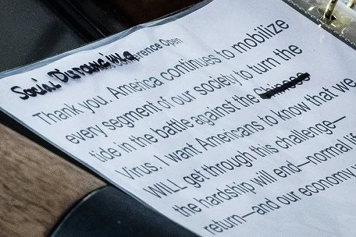

新冠疫情，美国是否会重演意大利发生的一切？
原文链接 备份链接 美国的情况将会变得多糟糕？华盛顿州州长杰伊 · 伊斯利（Jay Inslee）在 3 月 10 日曾表示，仅仅在华盛顿州，两个月内感染人数就可能达到 6.4 万人。而该数据是目前全美公布确诊人数的 16 倍，根据美国约 …

图片来源：白宫推特
记者 | 肖恩
“
“特朗普每提一次‘中国病毒’，美国社会的仇外情绪就会增加一分。”
”
特朗普改口了。
3月23日晚，在白宫举行的例行新冠肺炎疫情新闻发布会上，一名《华盛顿邮报》记者抓拍到了一个细节：在美国总统特朗普的演讲稿中，“中国病毒”一词中的“中国”被划去。

图片来源：推特
而在上周一场同样的发布会，同一名记者也拍到特朗普演讲稿上有一个单词被划掉。那次被划掉的是“新冠病毒”中的“新冠”（Corona）一词，并用笔在旁边补上了“中国”。

图片来源：推特
看似简单的两笔改动背后，充满了舆论战的硝烟。
自从新冠肺炎疫情在美国爆发后，特朗普屡次因为过分“随意”的言论引发争议，他此前给新冠病毒打上的“中国病毒”标签更是遭到中方、美国政坛内部和国际社会公共卫生和疾控专家的指责。内外压力下，特朗普最终被迫不再使用这一说法。
在23日的白宫新闻发布会上，特朗普将新冠肺炎疫情称为“病毒问题”（virus problem），而不再是“中国病毒”。在24日接受福克斯新闻网采访时，特朗普明确表示，他决定不再称新冠病毒为“中国病毒”。
特朗普还在推特上发文称，保护亚裔美国人很重要，他们都是优秀的人，病毒的传播跟他们没有任何关联。据《纽约时报》报道，新冠肺炎疫情爆发后，美国国内有关针对亚裔群体的言语和身体攻击的报告数量有所增加。

就在一周前，特朗普还多次在公开场合提到“中国病毒”的字眼，并强调这不是种族主义。美国国务卿蓬佩奥和多名共和党议员也屡次将新冠病毒称为“中国病毒”或“武汉病毒”。
美国加州民主党华裔众议员、国会亚太裔党团主席赵美心（Judy Chu）公开抨击了此类带有偏见的言论。赵美心表示，特朗普每提一次“中国病毒”，美国社会的仇外情绪就会增加一分。
美国国会参议员、参议院外交关系委员会成员本·卡丁也呼吁蓬佩奥和其他国务院官员停止使用“武汉病毒”或“中国病毒”一词来指代新冠病毒。
卡丁指出，在谈及这场全球性流行病时，除了使用恰当的医学名称外，任何其他名称都是无益的；在最坏的情况下，当面临健康危机时，这还可能会加剧刻板印象、恐惧以及仇外情绪。
卡丁强调，将疾病与国家、种族或宗教联系起来，带有一种更为邪恶的性质，而蓬佩奥和国务院高级幕僚为国务院工作人员设定的基调至关重要。
马里兰大学巴尔的摩县分校心理学教授谢晓玲（Charissa Cheah）也表示，领导人就是那个划分“可接受”和“不可接受”界限的人，而特朗普忽视了他的措辞会带来的后果。他的行为只会助长美国的反华情绪，受伤害最深的就是华裔或亚裔美国人群体，而这些群体本应该是他保护的对象
世界卫生组织在给新冠肺炎命名为“2019冠状病毒病”（COVID-19）时就明确指出，给新冠病毒取一个官方名称就是为了防止污名化。世卫组织总干事谭德塞表示，“我们想要一个不影射任何地理位置、动物、个人或群体的名字。”
美国有线电视新闻网（CNN）报道称，在咨询过医学专家以及参考世卫组织的指导意见后，CNN认为，“中国病毒”这个说法不准确而且是污名化。
过去几天，美国的疫情形势日趋严峻。据美国约翰·霍普金斯大学统计的数据，截至北京时间3月25日10点49分，美国累计确诊新冠肺炎病例55041例，仅次于中国和意大利，其中死亡790例。超过半数州已出台封锁政策，上亿人生活受到影响。
未经授权 禁止转载

原文链接 备份链接 美国的情况将会变得多糟糕？华盛顿州州长杰伊 · 伊斯利（Jay Inslee）在 3 月 10 日曾表示，仅仅在华盛顿州，两个月内感染人数就可能达到 6.4 万人。而该数据是目前全美公布确诊人数的 16 倍，根据美国约 …
原文链接 备份链接 当人类生存的主题被病毒、大流行病裹挟时，在白宫坐镇的特朗普、民间看好的疾病专家安东尼·福西和美联储主席鲍威尔纷纷出招，是老旧的套路还是定海神针，还未可知 文 |《财经》特派记者 金焱 发自华盛顿 编辑 | 苏琦 3 …
原文链接 备份链接 2月29日，特朗普出席“保守派政治行动大会”。图片来源：CPAC/Twitter 记者 | 潘金花 “ “我一点都不担心。”美国总统特朗普告诉记者，自己不会因为新冠肺炎疫情而取消政治集会。要 ” “我一点都不担心。” …
原文链接 备份链接 据美国《纽约时报》汇总各州公共卫生部门公布的新冠肺炎确诊病例，截至当地时间5日下午，全美已有163例确诊病例，分布在18个州。华盛顿州公共卫生部门5日公布了一例死亡病例，使得全美死亡病例达到了12例。 数据显示，美国 …
原文链接 备份链接 全球性危机的解决 只有全球合作才能解决 点击图片，一键下单 「*全球抗疫 惟有合作*」 记者 | 刘周岩 郜超 实习记者 | 张佳婧 在意大利刚刚“封国”的那段时间，喜爱歌舞的意大利人将他们平日里的露天音乐会搬到阳 …